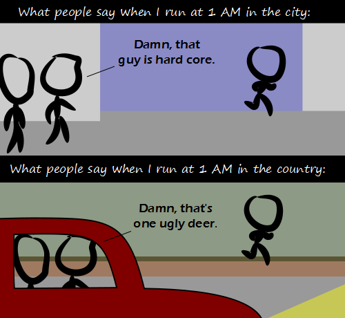

Comic JK 845
When I Feel Like It
⇤
<
?
>
⇥

⇤
<
?
>
⇥
Forum
.
RSS
.
Digg
.
Facebook
.
Reddit
.
Twitter
.
Stumbleupon
Enter your thoughts on number 845 here. Please, no spamming, trolling, phreaking, or running at 1 AM. Wabbit season. >Be vewy vewy quiet. Duck season. Wabbit season. Out of season. Italian Season.ing Elmer season. Ether season Tourist season Humans that change what season it is season. If I run at 1 AM in the city people will say: "Thief! Call the police!" >+1+1 >+2? >+4 >>=8? >>>true >>>>i'm going to assume they where trying for 1 1 2 3 5 8 but it got derailed... >>>>>not sure where you got that idea... >4=3.1415926 >>P=NP >>>P =/= NP >count++ >>==count >>>;//evaluates to 0 ... someone doesn't want to admit that they're a hypocrite when it comes to censorship. Is the deleter a Republican by chance? >Either that or a Democrat. Democrats and Republicans are the biggest hypocrites. > I don't agree with the censorship, but is it something if we can all agree as a community to keep the "adult"ness of the comments to the same level as the comic? Or is that also censorship? >> Your mother gently touched my swollen member. >> I'm offended by green text on black backgrounds. Does that mean I should delete all this stuff? >>>That doesn't make any sense >>>No. If you don't like green text, you can speak up and maybe someone will change it. When this website migrated, there were some small differences from the old site, and on the people's request, things were changed back. >>>> OMG green on black!!! Evil Evil. Someone please think of the children! >>>>>Does anybody actually want to have a conversation about this? Or should we just shut it down. I find green on black relaxing > And if you don't like it, you can use GreaseMonkey to change it for your own preference. >>Stylish for Chrome and Firefox